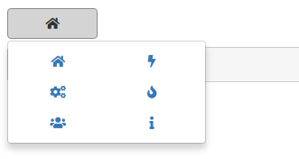

Use esquisse as a Shiny module
{esquisse} is built with Shiny modules (see this article for reference), so you can use {esquisse} directly into a Shiny application :
library(esquisse)
library(shiny)
library(ggplot2)
ui <- fluidPage(
titlePanel("Use esquisse as a Shiny module"),
sidebarLayout(
sidebarPanel(
radioButtons(
inputId = "data",
label = "Select data to use:",
choices = c("mpg", "diamonds", "economics")
)
),
mainPanel(
tabsetPanel(
tabPanel(
title = "esquisse",
esquisse_ui(
id = "esquisse",
header = FALSE # dont display gadget title
)
),
tabPanel(
title = "output",
tags$b("Code:"),
verbatimTextOutput("code"),
tags$b("Filters:"),
verbatimTextOutput("filters"),
tags$b("Data:"),
verbatimTextOutput("data")
)
)
)
)
)
server <- function(input, output, session) {
data_r <- reactiveValues(data = iris, name = "iris")
observe({
data_r$data <- get(input$data)
data_r$name <- input$data
})
results <- esquisse_server(
id = "esquisse",
data_rv = data_r
)
output$code <- renderPrint({
results$code_plot
})
output$filters <- renderPrint({
results$code_filters
})
output$data <- renderPrint({
str(results$data)
})
}
shinyApp(ui, server)Result looks like :

The output of the module is a reactiveValues with 3 slots :
- code_plot : code to generate plot.
- code_filters : a list of length two with code to reproduce filters.
-
data :
data.frameused in plot (with filters applied).
Module for saving a ggplot object
This module allow to save a ggplot object in various format and to resize it before:

You can call the module from server to display it in a modal window (it’s also possible to display it directly in your UI):
function(input, output, session) {
observeEvent(input$save, { # actionButton to trigger modal
save_ggplot_modal("ID", "Save plot") # launch modal
})
save_ggplot_server("ID", rv) # rv is a reactiValues with a slot 'plot'
}See ?"save-ggplot-module" for complete example.
Module to render a plot and add export options
Add a menu to directly export plot, you can also launch module above for more controls (height, width, filename) by clicking “More options”:

library(shiny)
library(ggplot2)
library(esquisse)
ui <- fluidPage(
tags$h2("ggplot output"),
selectInput("var", "Variable:", names(economics)[-1]),
ggplot_output("MYID", width = "600px")
)
server <- function(input, output, session) {
render_ggplot("MYID", {
ggplot(economics) +
geom_line(aes(date, !!sym(input$var))) +
theme_minimal() +
labs(
title = "A cool chart made with ggplot2",
subtitle = "that you can export in various format"
)
})
}
if (interactive())
shinyApp(ui, server)Input widgets
The drag-and-drop widget along with the button to select a geom and the color/palette picker are exported:
dragulaInput
ui <- fluidPage(
tags$h2("Demo dragulaInput"),
tags$br(),
dragulaInput(
inputId = "dad",
sourceLabel = "Source",
targetsLabels = c("Target 1", "Target 2"),
choices = names(iris),
width = "400px"
),
verbatimTextOutput(outputId = "result")
)
server <- function(input, output, session) {
output$result <- renderPrint(str(input$dad))
}
shinyApp(ui = ui, server = server)
dropInput
The widget used to select a geom in esquisser addin. You can use images or icons for example:
ui <- fluidPage(
tags$h2("Drop Input"),
dropInput(
inputId = "mydrop",
choicesNames = tagList(
list(icon("home"), style = "width: 100px;"),
list(icon("flash"), style = "width: 100px;"),
list(icon("cogs"), style = "width: 100px;"),
list(icon("fire"), style = "width: 100px;"),
list(icon("users"), style = "width: 100px;"),
list(icon("info"), style = "width: 100px;")
),
choicesValues = c("home", "flash", "cogs",
"fire", "users", "info"),
dropWidth = "220px"
),
verbatimTextOutput(outputId = "res")
)
server <- function(input, output, session) {
output$res <- renderPrint({
input$mydrop
})
}
shinyApp(ui, server)
colorPicker
A select menu to choose one or several colors:
ui <- fluidPage(
tags$h2("Color Picker"),
colorPicker(
inputId = "col",
label = "Choose a color:",
choices = scales::brewer_pal(palette = "Dark2")(8),
textColor = "white"
),
verbatimTextOutput(outputId = "res")
)
server <- function(input, output, session) {
output$res <- renderPrint({
input$col
})
}
shinyApp(ui, server)
palettePicker
A select menu to choose a color palette:
library(scales)
ui <- fluidPage(
tags$h2("Palette Picker"),
palettePicker(
inputId = "pal",
label = "Choose a palette",
choices = list(
"Viridis" = list(
"viridis" = viridis_pal(option = "viridis")(10),
"magma" = viridis_pal(option = "magma")(10),
"inferno" = viridis_pal(option = "inferno")(10),
"plasma" = viridis_pal(option = "plasma")(10),
"cividis" = viridis_pal(option = "cividis")(10)
),
"Brewer" = list(
"Blues" = brewer_pal(palette = "Blues")(8),
"Reds" = brewer_pal(palette = "Reds")(8),
"Paired" = brewer_pal(palette = "Paired")(8),
"Set1" = brewer_pal(palette = "Set1")(8)
)
),
textColor = c(
rep("white", 5), rep("black", 4)
)
),
verbatimTextOutput(outputId = "res")
)
server <- function(input, output, session) {
output$res <- renderPrint({
input$pal
})
}
shinyApp(ui, server)